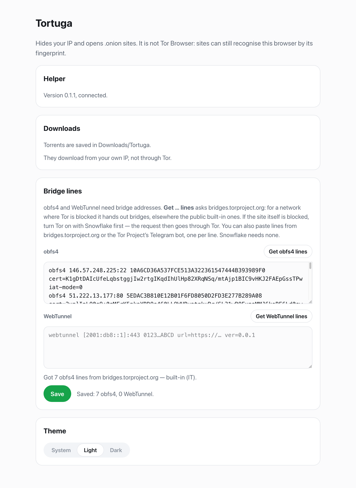

<!doctype html>
<!--
  Store graphics for the Chrome Web Store and Firefox Add-ons. One page, one
  slide per #hash, rendered at the slide's exact size by ../render.sh.
  Popup images in shots/ are real 2x captures (extension/scripts/live-check/
  run.sh screenshots with SCALE=2).
-->
<html lang="en">
<head>
<meta charset="utf-8">
<style>
  :root {
    --text: #15181d; --text-2: #5d6673; --accent: #16a34a; --line: #e6e8ec;
    --font: -apple-system, BlinkMacSystemFont, "SF Pro Display", "Inter", "Segoe UI", sans-serif;
  }
  * { box-sizing: border-box; margin: 0; }
  html, body { overflow: hidden; }
  body { font-family: var(--font); color: var(--text); -webkit-font-smoothing: antialiased; }
  .slide { position: relative; overflow: hidden;
    background:
      radial-gradient(900px 600px at 82% 55%, rgba(22, 163, 74, 0.10), transparent 70%),
      linear-gradient(135deg, #f8f9fb 0%, #f2f4f7 100%); }
  .slide.dark { color: #eef0f3;
    background:
      radial-gradient(900px 600px at 70% 50%, rgba(52, 211, 153, 0.12), transparent 70%),
      linear-gradient(135deg, #111418 0%, #0b0d10 100%); }
  .dark .sub, .dark li { color: #a3abb6; }
  .copy { position: absolute; }
  .brand { display: flex; align-items: center; gap: 12px; font-weight: 700; font-size: 24px; letter-spacing: -0.01em; }
  .brand img { width: 44px; height: 44px; }
  h1 { font-weight: 800; letter-spacing: -0.035em; line-height: 1.04; }
  h1 em { font-style: normal; color: var(--accent); }
  .dark h1 em { color: #34d399; }
  .sub { color: var(--text-2); line-height: 1.5; }
  ul { list-style: none; padding: 0; }
  li { position: relative; padding-left: 26px; color: #3b424c; line-height: 1.35; }
  li::before { content: ""; position: absolute; left: 3px; top: 0.42em; width: 10px; height: 10px; border-radius: 50%;
    background: var(--accent); box-shadow: 0 0 0 4px rgba(22, 163, 74, 0.16); }
  .dark li::before { background: #34d399; box-shadow: 0 0 0 4px rgba(52, 211, 153, 0.18); }
  .shot { position: absolute; display: block; border-radius: 18px; overflow: hidden;
    border: 1px solid rgba(16, 24, 40, 0.08);
    box-shadow: 0 2px 6px rgba(16, 24, 40, 0.06), 0 30px 70px rgba(16, 24, 40, 0.18); }
  .dark .shot { border-color: rgba(255, 255, 255, 0.08); box-shadow: 0 30px 80px rgba(0, 0, 0, 0.55); }
  .shot img { display: block; width: 100%; }
  .note { color: #b45309; }

  /* 1280 x 800 screenshots */
  .s { width: 1280px; height: 800px; }
  .s .copy { left: 104px; top: 0; bottom: 0; width: 600px; display: flex; flex-direction: column; justify-content: center; gap: 22px; }
  .s h1 { font-size: 60px; }
  .s .sub { font-size: 21px; max-width: 540px; }
  .s ul { display: grid; gap: 14px; margin-top: 6px; }
  .s li { font-size: 19px; }

  /* 440 x 280 small promo tile */
  .tile { width: 440px; height: 280px; }
  .tile .copy { left: 26px; top: 24px; right: 26px; }
  .tile .brand { font-size: 20px; gap: 9px; }
  .tile .brand img { width: 38px; height: 38px; }
  .tile h1 { font-size: 46px; margin-top: 16px; }
  .tile .sub { font-size: 15px; margin-top: 10px; }

  /* 1400 x 560 marquee */
  .marquee { width: 1400px; height: 560px; }
  .marquee .copy { left: 120px; top: 0; bottom: 0; width: 680px; display: flex; flex-direction: column; justify-content: center; gap: 22px; }
  .marquee h1 { font-size: 64px; }
  .marquee ul { display: grid; gap: 13px; }
  .marquee li { font-size: 19px; }
</style>
</head>
<body>
<div id="root"></div>
<script>
  const brand = '<div class="brand">Tortuga</div>';
  const shot = (src, css) => `<div class="shot" style="${css}"></div>`;
  const list = items => `<ul>${items.map(i => `<li>${i}</li>`).join('')}</ul>`;

  const slides = {
    // Screenshots, 1280 x 800
    route: `<div class="slide s">
      <div class="copy">${brand}
        <h1>Your browser,<br><em>through Tor.</em></h1>
        <p class="sub">Flip one switch. Tortuga runs Tor on your computer and draws the route each site takes.</p>
        ${list(['Hides your IP and opens .onion sites', 'See the bridge, middle and exit relay for every site', 'If Tor stops, nothing leaks: pages are blocked'])}
      </div>
      ${shot('light-route', 'right: 120px; top: 143px; width: 440px;')}
    </div>`,

    bridges: `<div class="slide s">
      <div class="copy">${brand}
        <h1>Gets through<br><em>when Tor is blocked.</em></h1>
        <p class="sub">Bridges hide that you're connecting to Tor. Each one is drawn as its own kind of line.</p>
        ${list(['Snowflake works out of the box', 'obfs4 and WebTunnel lines from the Tor Project in one click', 'Switch bridges without leaving the popup'])}
      </div>
      ${shot('light-bridges', 'right: 170px; top: 30px; width: 340px;')}
    </div>`,

    downloads: `<div class="slide s">
      <div class="copy" style="width: 560px;">${brand}
        <h1>Torrent links,<br><em>right in the popup.</em></h1>
        <p class="sub">Click a magnet or .torrent link, check the name and size, and download.</p>
        ${list(['Pause, resume, or remove with the files', 'Right-click any link, or paste one in', '<span class="note">Torrents use your own IP, not Tor, and Tortuga says so</span>'])}
      </div>
      ${shot('light-confirm', 'right: 236px; top: 60px; width: 400px;')}
      ${shot('light-downloads', 'right: 72px; top: 338px; width: 380px;')}
    </div>`,

    settings: `<div class="slide s">
      <div class="copy" style="width: 470px;">${brand}
        <h1>Bridge lines<br><em>in one click.</em></h1>
        <p class="sub">Tortuga asks bridges.torproject.org for you, through Tor when the site is blocked. Or paste your own.</p>
        ${list(['Only when you ask for them', 'No account, no analytics', 'Light or dark, or follow the system'])}
      </div>
      <div class="shot" style="right: 64px; top: 150px; width: 600px; height: 500px; background: #fbfbfc;">
        
      </div>
    </div>`,

    dark: `<div class="slide s dark">
      <div class="copy" style="width: 470px;">${brand}
        <h1>Light<br><em>or dark.</em></h1>
        <p class="sub">Follows your system, or pick one in Settings.</p>
        ${list(['Route and downloads in two tabs', 'A badge counts active downloads'])}
      </div>
      ${shot('dark-route', 'right: 410px; top: 160px; width: 320px;')}
      ${shot('dark-downloads', 'right: 70px; top: 270px; width: 320px;')}
    </div>`,

    // Small promo tile, 440 x 280
    tile: `<div class="slide tile">
      <div class="copy">${brand}
        <h1>Your browser,<br><em>through Tor.</em></h1>
        <p class="sub">See every route. Download torrent links.</p>
      </div>
      <svg class="metro" viewBox="0 0 440 40" width="440" height="40" style="position: absolute; left: 0; bottom: 14px;">
        <line x1="40" y1="20" x2="130" y2="20" stroke="#2563eb" stroke-width="5" stroke-linecap="round" stroke-dasharray="0.1 11"/>
        <line x1="150" y1="20" x2="400" y2="20" stroke="#16a34a" stroke-width="7" stroke-linecap="round"/>
        <circle cx="34" cy="20" r="9" fill="#fff" stroke="#15181d" stroke-width="4"/>
        <rect x="130" y="9" width="22" height="22" rx="6" fill="#fff" stroke="#2563eb" stroke-width="4"/>
        <circle cx="232" cy="20" r="9" fill="#fff" stroke="#16a34a" stroke-width="4"/>
        <circle cx="314" cy="20" r="9" fill="#fff" stroke="#16a34a" stroke-width="4"/>
        <circle cx="400" cy="20" r="13" fill="#16a34a"/>
      </svg>
    </div>`,

    // Marquee promo tile, 1400 x 560
    marquee: `<div class="slide marquee">
      <div class="copy">${brand}
        <h1>Your browser,<br><em>through Tor.</em></h1>
        ${list(['A separate route for each site, drawn like a metro line', 'Bridges for blocked networks: Snowflake, obfs4, WebTunnel', 'Torrent links download right from the popup'])}
      </div>
      ${shot('light-route', 'right: 150px; top: 64px; width: 420px;')}
    </div>`,
  };
  document.getElementById('root').innerHTML = slides[location.hash.slice(1)] ?? Object.keys(slides).join(' ');
</script>
</body>
</html>
